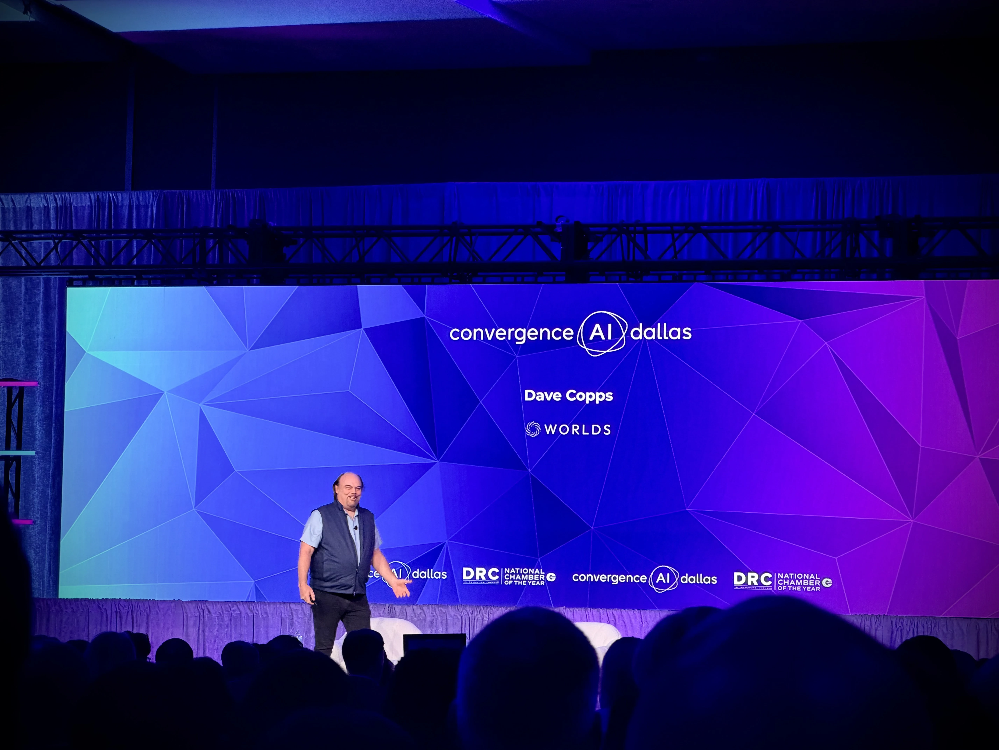
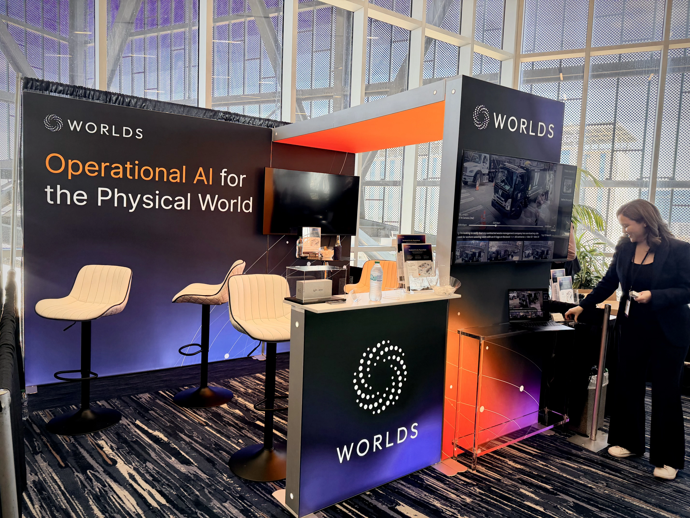
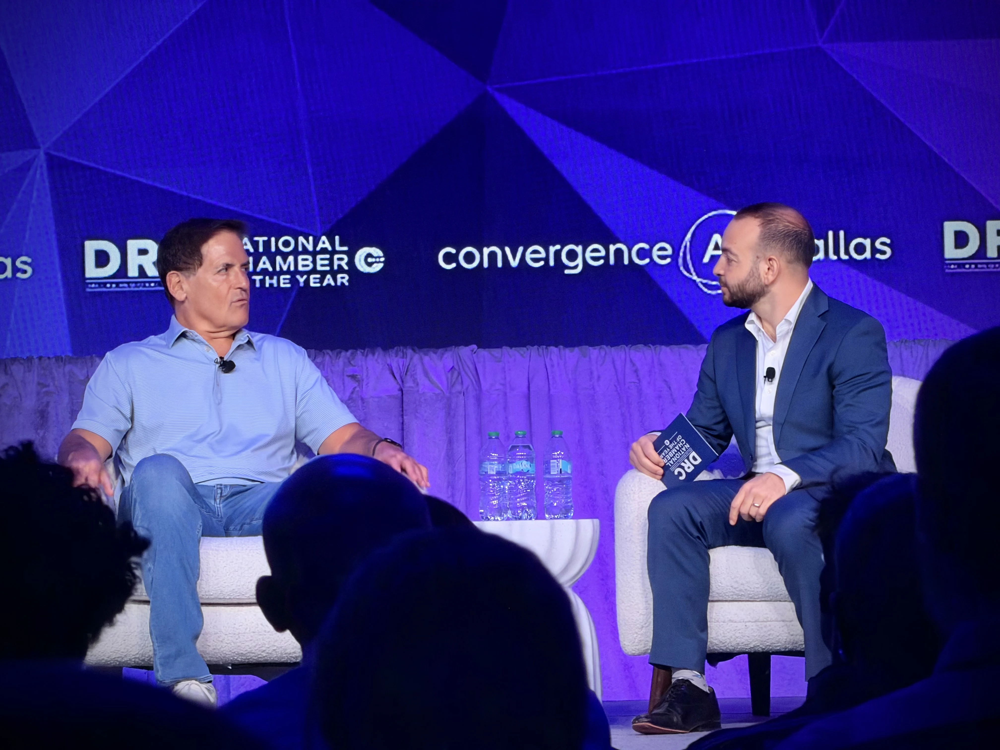
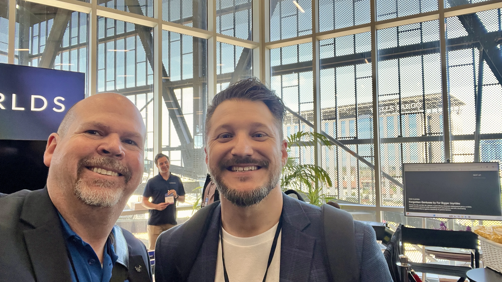

Our team at Worlds just had one of those weeks where months of work finally meets the real world.
I spent this week at Convergence AI Dallas, our CEO Davo got on stage and demoed the product experience my team has been building for the past several months:

- Agentic search - AI that doesn’t just return results, it reasons through them
- Customizable dashboarding framework - not a fixed layout, a system users shape to how they actually work
- Advanced realtime spatialization - grounding AI intelligence in physical space, in real time
Watching that demo land with a live audience was something else. These aren’t concepts anymore. They’re real product, getting real reactions.
The Design Story Behind It

I keep coming back to one idea that drives everything we’re doing on the product experience side:
We’re not building dashboards for AI. We’re designing how humans understand and direct intelligent systems operating in the real world.
That distinction matters. A lot of AI products stop at capability. They can do impressive things, but the interface is an afterthought. If the experience feels confusing, the AI doesn’t matter. Design is what gives intelligence a shape people can actually work with.
That’s the work I’m most proud of. Not just that we shipped features, but that we shipped them with craft. Loading behavior, interaction polish, spatial awareness, the details that make people say “this feels good” instead of “this is complicated.”
Beyond the Demo

The rest of the conference was electric. Robots on the floor. AI leaders from across the industry on stage. Conversations about where all of this is heading that genuinely surprised me.
And honestly, one of the best parts was reconnecting with friends and collaborators I haven’t seen in a while. The AI community in Dallas showed up.
What I Took Away

The companies that win the AI era won’t be the ones with the best models. They’ll be the ones that make intelligence usable, trustworthy, and human.
That’s a design leadership problem. And it’s exactly where I want to be.